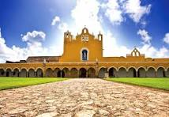
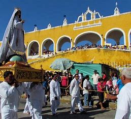
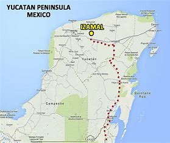
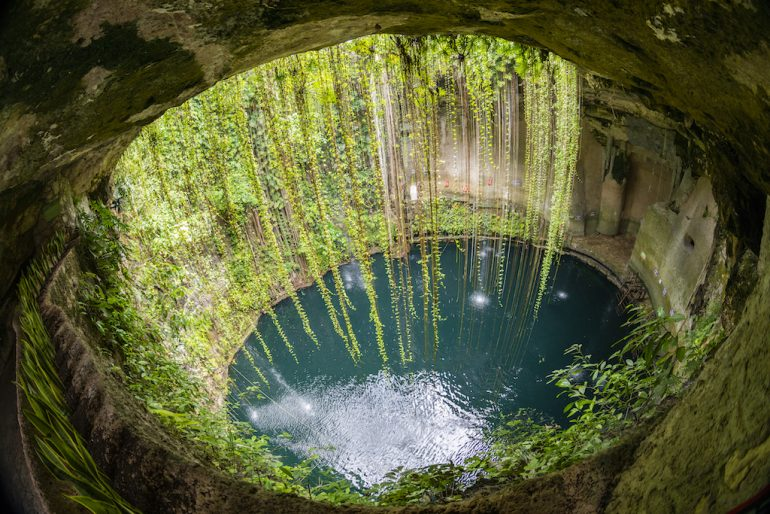
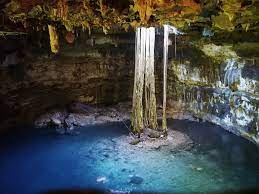
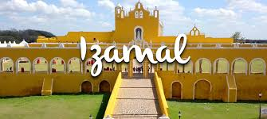

IR AL MENU
Conocida como la ciudad de las tres culturas, esta pintada de amarrillo
(el color del vaticano), debido a la visita del Papa Juan Pablo ll en
1993. Es una visita obligada apra conocer el iconico convento
franciscano de San Antonio de padua, uno de los mas grandes de america
latina y considerando uno de los coloniales mas grandes de mexico. Las
piramides de Kinch Kak, Itzamatul, y el conejo. disfrutar del
espectaculo de luz y sonido "las luz mayas que se presenta en atrio del
covento.
El
convento de san antonio de padua ubicado en izamal, fue un poderoso
centro redector durante el periodo clasico fundado por
zamna,considerando como dios del universo de los mayas.

El convento de San Juan
de Padua , ubicado en izamal, son los franciscanos, que ya se habian
asegurado el control de la zona oeste de la peninsula de campeche,
Merida, Mani, comenzaron a dominar la zona norte.

La
construccion fue dirigida por un reconocido arquitecto y maestro de la
epoca, el Padre Fray Juan de Merida quien estuvo a cargo de muchas
edificaciones de orden religioso en la peninsula de yucatan. El
convento de San Antonio de Padua fue uno de sus mas grandes
obras, que fue fundamental para el desarrollo de la zona. En la
actualidad el convdento como todo izamal, esta pintado de amarrillo
ocre, color que se le puso desde 1993, con motivo de la visita del Papa
Juan Pablo.
El atrio principal es de forma rectangular y tiene un extension de
7,806 43 m lo que lo convierte en el atrio cerrado mas grande de
America y en el segundo mas grande del mundo de la plaza de convento.
Cuenta con un total de 75 arcos pero ninguno de los cuatro lados
de gran rectangulo cuentan con el mismo numero de arcos 26 estan
ubicados frente a la fachada del templo (oriente) 25 del lado de
capilla de posas y dos claustros. El alto y bajo la fachada
actual no es la original que fue modificada hacia el fin de la colonia.
FESTIVIDADES DE PUEBLO IZAMAL

Izamal es un pueblo
lleno de fiestas y varias de ellas estan relacionadas con el convento.
Cada 13 de junio se celebra el dia de San Antonio de Padua patrono de
los franciscanos y fiel devoto a la religion desde temprana edad. Las
fiestas inician con una ceremonia para bajar a la imagen del
santo y llevarlo a peregrinar por las calles con musica, flores fuego
artificiales. El dia 13 de junio se celebra la subida del santo y el
ultimo gremio ndevuelve la imagen a la iglesia para concluir se
lleva acabo una misa de los fieles seguidores.
Como la virgen es la patrona de la
ciudad, el 15 de agosto comienzan los festejos que duran 10 dias
durante los que el gremioque lo organiza lleva acabo las procesiones y
vaquerias de su honor.
Del 1 al 12 de Diciembre se festeja a la purisima
Concepcion, el primer dia se lleva acabo a la bajada de la imagen, lo
que marca el inicio de los festejos en honor a la virgen de Izamal que
llevan al cabo en la parroquia del convento de San Antonio de Padua.
LA GASTRONOMIA
Comidas tipicas de Izamal:Entre los mas representativos se encuentran, los panuchos, salbutes,
papadzules, chocolomo, queso relleno y sopa de lima, entre otros
muchos. Sin embargo el platillo que caracteriza en izamal es el frijol
con puerco que incluye lomo, pierna, tomate, rabano, cebolla, cilantro,
aguacate, chile habanero y ricas tortillas hechas a mano. Tambien
puedes probar el licor conocido como "Agua de vida" que es licor
producido por las plantas de henequen con un gusto similar al tequila.
Si quieres una experiencia en donde puedas convivir con los locales te invitamos a visitar el mercado local.
Estos son las costumbres de izamal
- La fiesta popular de san roman. izamal yucatan.
- fiesta de la virgen de guadalupe. izamal yucatan.
- fiesta de san idefonso. izamal yucatan.
- Dia del cristo de sitilpech. izamal ycatan.
- fiesta tradicional a la virgen de candelaria. izamal yucatan.
- fiesta de la santa cruz.
"ATRACCIONES MAS POPULARES EN IZAMAL"
- Zonas arqueologicas
- centro de cultura y artesanal.
- piramide de Kinich Kak Moo.
- plaza izamal monumentos y lugares de interes.
- cenote chuhuan masas de agua.
- izamal municipal.
ubicacion

ESTOS SON LOS CENOTES DE IZAMAL

Este
cenote en izamal en uno de los mas recientes hallaszgos arqueologicos
en la zona, pues los atrompologos del INAH encontraron su entrada en
abril del 2023. Por esta razon, aun se encuentra cerrado al publico en
general ya que se esta comenzando su estudio. Durante la epoca
prehispanica el lugar representaba un puente entre el mundo terrestre y
el inframundo, aqui se depositaban ofrendas y tenia un caracter sagrado
incluso hay indicios que tienen relacion con las pramides de izamal.
CENOTE DE CHIHUAN

CENOTE CHIHUAN Se ubica a poco menos de cuarenta minutos
del centro de izamal, es un lugar lleno de historia al menos eso dice
la familia che a quien le pertenece este lugar en la actualidad.
En la epoca precolombina funciono como refugio entre los cocones entre
chichen itza. Ya durante la epoca de idependencia fungio como refugio
para los indigenas que huian de la represion de la colonia. Para entrar
al cenote chihuan debes descender al subsuelo a traves de unas
escaleras y luego dejarte caer sobre las aguas cristalinos.
CENOTE DE BEBELCHEN:
Este es uno de los cenotes de izamal y sus proximidades mas hermoso. El
para llegar es medio complicado, pero vale mucho la pena se los
aseguro. Para llegar debes de pasar un pequeño tramo de
terraceria. Es un cenote cerrado y lo ,as bello de el es boveda llena
de estalacticas muy delgadas que llega al tocar el agua
La
ciudad de izamal es un lugar muy hermoso sin duda alguna es unos de los
los lugares amgicos para pasarla super con tu pareja, familias , o
amigos ven a dsifrutar de nuestros bellos lugares arqueologicos y
turisticos. Si tienes la oportunidad no la desaproveches.

La entrada del convento de izamal luce un camino empedrado y parte de
su gran arqueria , es lugar muy hermoso y magico que no te puedes
perder ven y visita este lindo lugar te iras muy encantado y enamorados
de uestra bbella ciudad de izamal
¡gracias!